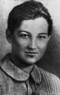

главная  персоналии
персоналии  Зоя Космодемьянская
Зоя Космодемьянская
главная |

Личность в историикраткая энциклопедияПроект «Личность в истории» посвящен людям — современникам грандиозных исторических событий, носителям редких качеств или людям, взгляды которых опередили их время. |
|||||||||||||||||||
Коротко |
Статьи |
Персоналии |
Литература |
||||||||||||||||
Зоя Космодемьянская |
|||||||||||||||||||
|
«Низкий поклон и вечная память героям, достойно представляющим целое поколение нашего народа. Фронтовое поколение». Кожемяко В., |

Зоя Космодемьянская | ||||||||||||||||||
Биографическая справкаКосмодемьянская Зоя Анатольевна (Таня) (13.9.1923 г., село Осиновые Гаи Тамбовской области, — 29.11.1941 г., деревня Петрищево Верейского района Московской области), советская партизанка, героиня Великой Отечественной войны 1941–45 гг. В конце ноября 1941 г. в деревне Петрищево при выполнении боевого задания была схвачена фашистами. Несмотря на чудовищные пытки и издевательства палачей, не выдала товарищей, не открыла своего настоящего имени, назвавшись Таней (немного ранее этот псевдоним Зоя взяла в честь Татьяны Соломахи). 29 ноября 1941 г. была казнена. 16 февраля 1942 г. посмертно присвоено звание Героя Советского Союза. Хронология
Цитаты«Как бы ни была занята девушка, сколько бы ни было у нее хлопот, она всегда находила время для любимого своего занятия — чтения». (В. Успенский. Зоя Космодемьянская. «4 избы вокруг нас пылали. Наша изба наполнилась солдатами, оставшимися без крова. Наше волнение быстро улеглось, и, выставив полроты для охраны от поджога остальных домов, мы довольно неудобно провели остаток первой ночи». (??з показаний унтер-офицера «Когда Зоя подожгла соседний с нами дом Кареловых и сарай с лошадьми возле него, немцы выскакивали полуодетые». (??з воспоминаний жителя деревни Петрищево «Девушку поволокли в помещение штаба батальона, вскоре туда явился командир полка подполковник Рюдерер. Через переводчика он хотел не только добиться признания, но и выяснить имена помощников. Но ни одно слово не сорвалось с губ девушки… На улице ее продолжали избивать до тех пор, пока не пришел приказ перенести несчастную в помещение. Ее принесли. Она посинела от мороза. Раны кровоточили. Она не сказала ничего». (??з показаний унтер-офицера «Переводчик повел пленную в караульное помещение. Было около полуночи, небо вызвездило, мороз окреп (В. Успенский. Зоя Космодемьянская. Статьи
Список литературы
|
|||||||||||||||||||
|